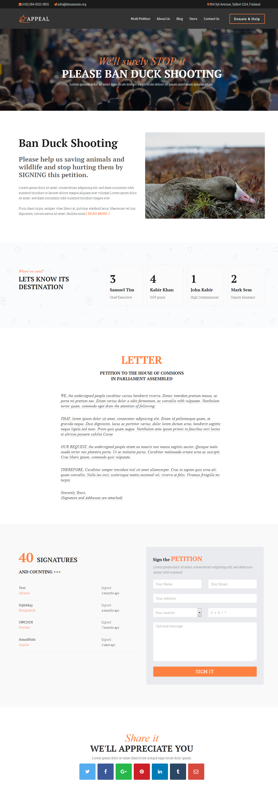
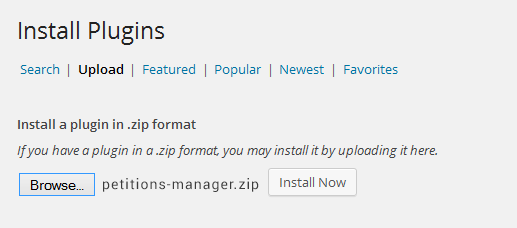
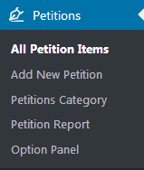
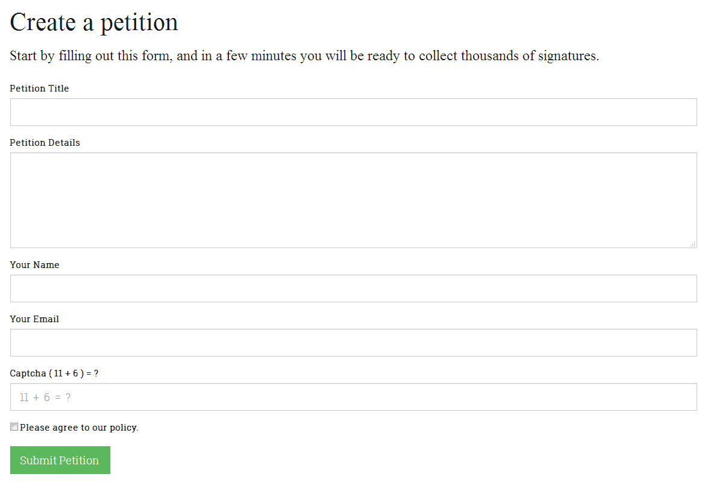
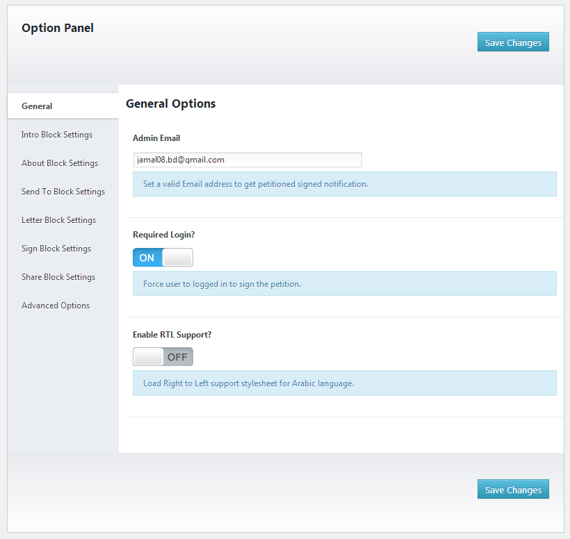
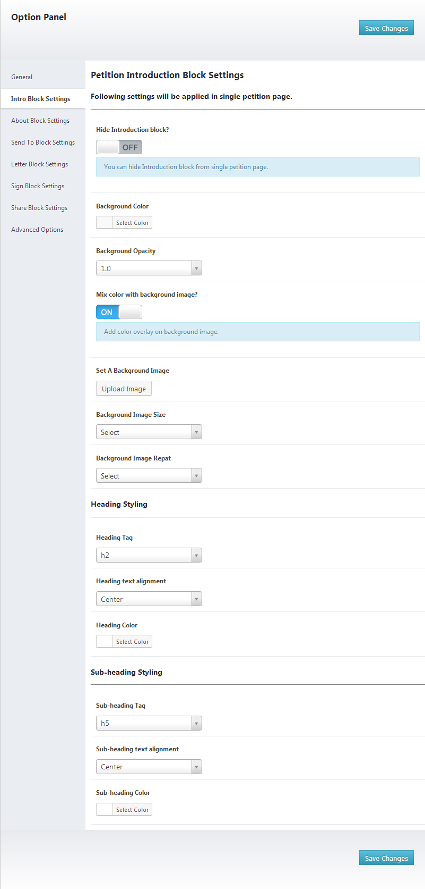
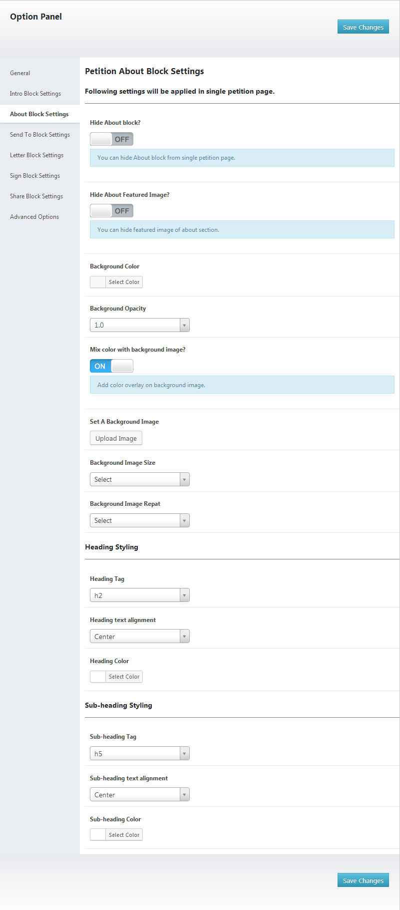
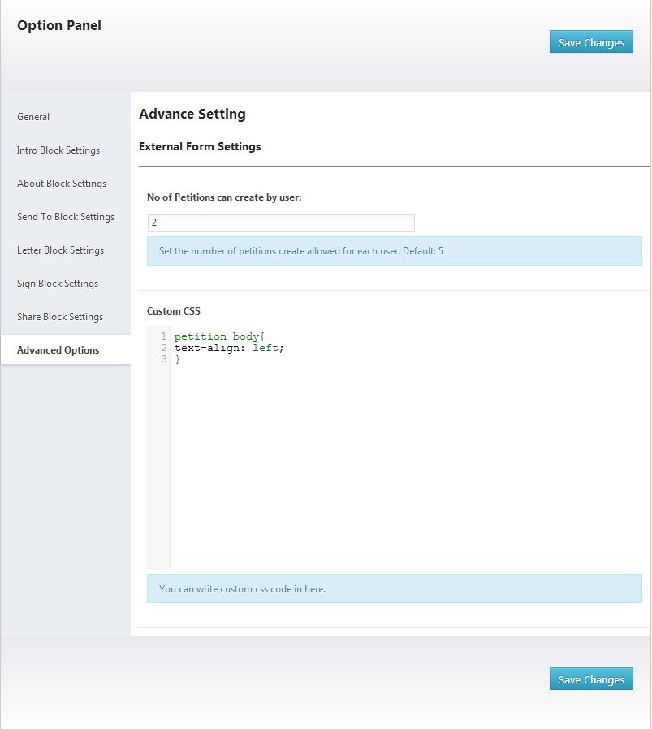

Petitions Manager WordPress Plugin Version - 1.0.1
Documentation by
Md Mahbub Alam Khan
Created: 22/09/2016
Last Edited:16/05/2017
By: Md Mahbub Alam Khan
Support: Get Premium Support
Web Site: www.bluewindlab.net
Thank you for purchasing Petitions Manager WordPress Plugin .
If you like this plugin, feel free to rate it five stars at ThemeForest downloads section at https://themeforest.net/downloads .
If you encounter any problems please do not give a low rating but contact us first. So We can help you.
Thank You!
Table of Contents
- Quick Introduction
- Installation
- Add New Petition
- How to use Short Code?
- External Petition Form
- Report Panel
- Option Panel
- Translate Plugin
- Upgrade Notes
- Change Log
- Credits
- Conclusion
A. Quick Introduction? - top
- 1. Create unlimited number of petitions.
- 1.1. External petition form to allow user to submit petition.
- 1.2 Review and approve petition by admin before publish online.
- 2. Easy to manage.
- 2.1 Report Panel & Download petition signatures in CSV format.
- 3. Custom section for a petition.
- - About section.
- - Introduction section.
- - Letter section.
- - Where to send section.
- - Petition featured image.
- - Petition success/victory declaration option.
- - Petition featured marked option.
- 4. Create unlimited petition categories.
- 5. Ajax powered petition sign form with Captcha security.
- 6.1 Allow sign petition only for logged in users.
- 7. Live signatures scroll option and animated signature counter panel.
- 8. Custom petition share option.
- 9. Extensive option panel to customize petition looks.
- 10. Beautiful page for single petition with comment support.
- 11. Multi-petitions support.
- 12. Fully customized visual composer petition blocks.
- 13. Tested up to latest WP version & Localization supported.
- 14. Support .po & .mo file.

B. Installation: - top
- Steps:
- Go to plugins section in your WordPress admin panel and click Add New to install plugin.

- Now, upload the "petitions-manager.zip" file.
 - Once plugin successfully uploaded in your server you will get an message to activate it. Click on "Activate Plugin" Link and plugin will be ready to use
- After activating plugin, you will redirect in plugins section of wp-admin panel and show new installed plugins information in there.

- Now you are ready to use Petition Manager Plugin! In left sidebar menu you will see a new section like following image.

C. Add New Petition - top
- Steps:
- Add new Petition items is almost similar like adding a new post. Go to "Petitions" section
and click "Add New Petition" link. After that you need to add following information for-
- Petition title,
- Petition Introduction,
- Petition About,
- Petition Letter,
- Petition Submitted To,
- Petition Sign Form & Result Settings,
- Petition Target Settings,
- Petition Share
- Petition category.
Finally click publish to save New Petition.

- Petition category page allows you to add unlimited number of categories for petition.

D. How to use Short Code? - top
- Available Shortcodes:
- Display External Form:
[bptm_external_form /]
E. External Petition Form - top
You can easily display external petition form to collect petitions from users. Please check following steps to display
STEP 01:

Output:

STEP 02:
Once user fill up all the information, plugin create a new account for user and send login information to user email address.
Later, User edit petition information by login their account.
User Panel Output:

F. Petition Report Panel - top
You can view/delete/download user sign information from petition report panel.

G. Option Panel - top
General Options -

Intro Block Settings -

About Block Settings -

Send To Block Settings -

Letter Block Settings -

Sign & Result Block Settings -

Share Block Settings -

Advance Settings -

H. Translate Plugin. - top
"Petitions Manager" offers cool translation feature. So, you can easily add this plugin any kind of website. Check following steps for translate "Petitions Manager" plugin.
- Inside of plugin "lang" folder you will get a file named "en_EN.po" file. To edit this file you need to install "poedit" software in your computer.
- Our Plugin text-domain is 'bwl-kb'
- If you are doing "localization of a plugin" for the first time, then I recommend you to check this video. http://www.youtube.com/watch?v=aGN-hbMCPMg
- Suppose you want to translate plugin in to "German" language.
So,".po" file name will be "bwl-kb-de_DE.po". That's all. - For country code check - http://www.gnu.org/savannah-checkouts/gnu/gettext/manual/html_node/Country-Codes.html#Country-Codes
- For Language code check - http://www.gnu.org/savannah-checkouts/gnu/gettext/manual/html_node/Usual-Language-Codes.html#Usual-Language-Codes
I. Upgrade Notes - top
2016, August, 22 - v 1.0.0
- Initial release
J. Change Log - top
2016, August, 22 - v 1.0.0
- Initial release
K. Credits - top
- Ideas By BlueWindLab
- Color Picker By http://www.eyecon.ro/colorpicker
L. Conclusion: - top
Once again, thank you so much for purchasing Petitions Manager WordPress Plugin .
Md. Mahbub Alam Khan